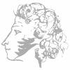

Александр Сергеевич Пушкин
Русский поэт, драматург и прозаик, заложивший основы русского реалистического направления, литературный критик и теоретик литературы, историк, публицист, журналист; один из самых авторитетных литературных деятелей первой трети XIX века.
